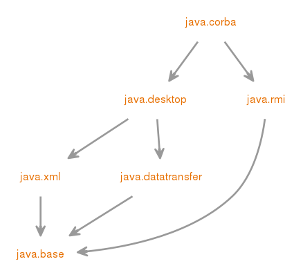

@Deprecated(since="9", forRemoval=true)
Module java.corba
Deprecated, for removal: This API element is subject to removal in a future version.
定义OMG CORBA API和RMI-IIOP API的Java绑定。
此模块可升级。
- Module Graph:
- 
- 从以下版本开始：
- 9
{kind=link}
-
-
Packages
Exports 软件包 描述 javax.activity 包含ORB机械在解组时抛出的活动服务相关异常。javax.rmi 包含RMI-IIOP的用户API。javax.rmi.CORBA 包含RMI-IIOP的可移植API。org.omg.CORBA 提供OMG CORBA API与JavaORB编程语言的映射，包括ORB类，它被实现为使得程序员可以将其用作全功能对象请求代理（ORB）。org.omg.CORBA_2_3 CORBA_2_3包定义了Java [tm]标准版6中现有CORBA接口的添加。这些更改发生在由OMG定义的CORBA API的最新修订版本中。 将新方法添加到从CORBA包中相应接口派生的接口。 这提供向后兼容性，并避免破坏JCK测试。org.omg.CORBA_2_3.portable 提供输入和输出值类型的方法，并包含org/omg/CORBA/portable包的其他更新。org.omg.CORBA.DynAnyPackage 提供与使用的异常DynAny接口（InvalidValue，Invalid，InvalidSeq，和TypeMismatch）。org.omg.CORBA.ORBPackage 提供异常InvalidName，它由方法ORB.resolve_initial_references抛出，异常InconsistentTypeCode由ORB类中的动态任何创建方法抛出。org.omg.CORBA.portable 提供可移植性层，即一组ORB API，使一个供应商生成的代码可以在另一个供应商的ORB上运行。org.omg.CORBA.TypeCodePackage 提供用户定义的异常BadKind和Bounds，它们由类TypeCode中的方法抛出。org.omg.CosNaming 为Java IDL提供命名服务。org.omg.CosNaming.NamingContextExtPackage 此软件包包含以下类别，用于org.omg.CosNaming.NamingContextExt：AddressHelperStringNameHelperURLStringHelperInvalidAddressorg.omg.CosNaming.NamingContextPackage 此包包含org.omg.CosNaming包的异常类。org.omg.Dynamic 该包包含OMG便携式拦截器规范 ptc/2000-08-06第21.9节中指定的Dynamic模块。org.omg.DynamicAny 提供类和接口，可以在运行时遍历与any相关联的数据值，并提取数据值的原始组成部分。org.omg.DynamicAny.DynAnyFactoryPackage org.omg.DynamicAny.DynAnyPackage org.omg.IOP 该包包含OMG文档 “通用对象请求代理：体系结构和规范 ” formal/99-10-07第13.6节中指定的IOP模块。org.omg.IOP.CodecFactoryPackage 该包包含IOP :: CodeFactory接口中指定的异常（作为便携式拦截器规范的一部分）。org.omg.IOP.CodecPackage 该包是从IOP :: Codec IDL接口定义生成的。org.omg.Messaging 该包包含OMG CORBA消息传递规范 formal/99-10-07中指定的Messaging模块。org.omg.PortableInterceptor 提供一种注册ORB钩子的机制，ORB服务可以通过该钩子拦截ORB的正常执行流程。org.omg.PortableInterceptor.ORBInitInfoPackage org.omg.PortableServer 提供类和接口，使您的应用程序的服务器端可跨多厂商ORBs移植。org.omg.PortableServer.CurrentPackage 提供方法实现，访问方法被调用的对象的标识。org.omg.PortableServer.POAManagerPackage 封装与之相关的POA的处理状态。org.omg.PortableServer.POAPackage 允许程序员构建可在不同ORB产品之间移植的对象实现。org.omg.PortableServer.portable 提供类和接口，使您的应用程序的服务器端可跨多厂商ORBs移植。org.omg.PortableServer.ServantLocatorPackage 提供用于定位仆人的类和接口。org.omg.SendingContext 为组合值类型提供支持。org.omg.stub.java.rmi 包含java.rmi软件包中出现的远程类型的RMI-IIOP存根。
-
Modules
Requires Modifier Module 描述 transitive java.desktop 定义AWT和Swing用户界面工具包，以及可访问性，音频，映像，打印和JavaBeans的API。transitive java.rmi 定义远程方法调用（RMI）API。Indirect Requires Modifier Module 描述 transitive java.datatransfer 定义用于在应用程序之间和之间传输数据的API。transitive java.xml 定义用于XML处理的Java API（JAXP），Streaming API for XML（StAX），Simple API for XML（SAX）和W3C文档对象模型（DOM）API。
-